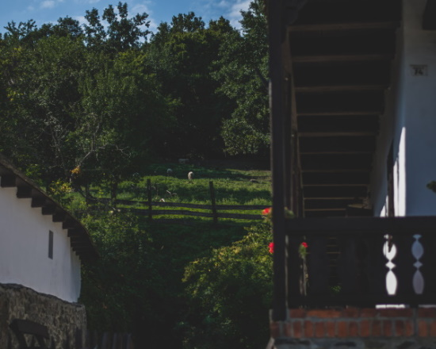
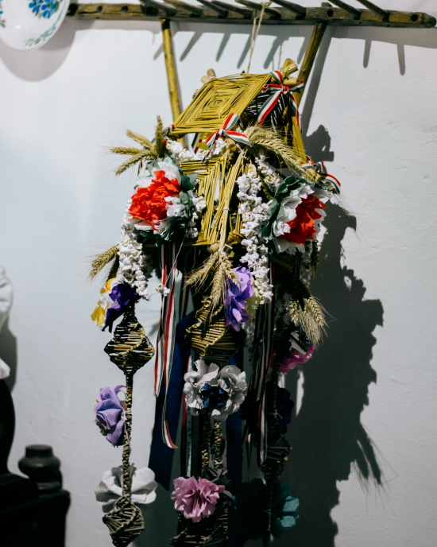

A Hollókői Falumúzeum Ófalui részén található. A látogató megtekintheti a hajdani lakosok életviteléhez szükséges berendezéseket és eszközöket.
Az állandó néprajzi kiállításnak helyet adó régi parasztház három helyiséges. A benne látható berendezés az 1920-as évek lakóházát és életvitelét hivatott bemutatni.
A palóc építészet szép példája: háromosztatú, alápincézett, nyeregtetős, kontyolt tetejű, deszkamellvédes korláttal rendelkezik, amely a házak többségénél az utcai homlokzat elé is kifut. Az utcára néző homlokzat háromszögbe zárt része, az oromzat anyaga és díszítésmódja éppúgy sajátos Palócföldön, mint a 19. század második harmadától elterjedt kőoszlopos tornác, vagy a tüzelőberendezésnek az a típusa, amely egy szögletes belső tüzelésű és kürtővel ellátott kemencéből, valamint kémény nélküli füstelvezető szerkezetből állt, amelyet a búboskemence váltott fel.
